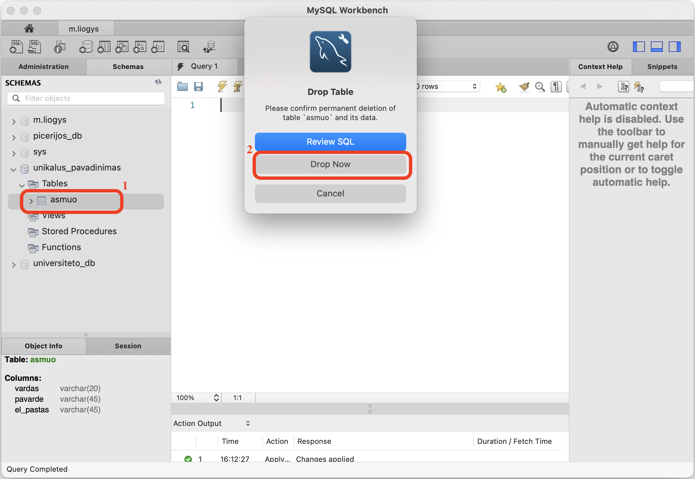

Atsakymai
1. Kaip sukurti duomenų bazę MySQL Workbench įrankiu?
- Spaudžiame schemos (duomenų bazės) kūrimo mygtuką
- Įvedame schemos (duomenų bazės) pavadinimą. Pavadinime nenaudokite tarpų, jei pavadinimui reikia daugiau nei vieno žodžio, apjunkite juos apatiniu brūkšneliu _ (kaip žemiau pateiktame paveikslėlyje).
- Spaudžiame mygtuką Apply. Kituose languose taip pat Apply ir Close.
1 pav. Duomenų bazės kūrimas.
2. Kaip ištrinti duomenų bazę MySQL Workbench įrankiu? (grįžti į viršų)
- Spaudžiame dešinį pelės mygtuką ant trinamos schemos (duomenų bazės) pavadinimo ir pasirenkame Drop Schema...
- Spaudžiame mygtuką Drop Now.
2 pav. Duomenų bazės šalinimas.
3. Kaip sukurti duomenų lentelę MySQL Workbench įrankiu? (grįžti į viršų)
- Spaudžiame dešinį pelės mygtuką ant Tables pavadinimo ir pasirenkame Create Table...
- Įvedame lentelės pavadinimą. Pavadinime nenaudokite tarpų, jei pavadinimui reikia daugiau nei vieno žodžio, apjunkite juos apatiniu brūkšneliu.
- Įvedame laukelių pavadinimus (tarpų taip pat geriau nenaudoti), pasirenkame duomenų tipus bei kitus nustatymus.
- Spaudžiame mygtuką Apply. Kituose languose taip pat Apply ir Close.
3 pav. Duomenų lentelės kūrimas.
4. Kaip pridėti papildomą laukelį duomenų lentelėje? (grįžti į viršų)
- Spaudžiame dešinį pelės mygtuką ant redaguojamos lentelės pavadinimo ir pasirenkame Alter Table...
- Įvedame naujo laukelio pavadinimą, pasirenkame duomenų tipą bei kitus nustatymus.
- Spaudžiame mygtuką Apply. Kituose languose taip pat Apply ir Close.
4 pav. Laukelio pridėjimas.
5. Kaip pašalinti laukelį iš duomenų lentelės? (grįžti į viršų)
- Spaudžiame dešinį pelės mygtuką ant redaguojamos lentelės pavadinimo ir pasirenkame Alter Table...
- Spaudžiame dešinį pelės mygtuką ant šalinamo laukelio pavadinimo ir pasirenkame Delete Selected.
- Spaudžiame mygtuką Apply. Kituose languose taip pat Apply ir Close.
5 pav. Laukelio šalinimas.
6. Kaip pakeisti lentelės laukelio duomenų tipą? (grįžti į viršų)
- Spaudžiame dešinį pelės mygtuką ant redaguojamos lentelės pavadinimo ir pasirenkame Alter Table...
- Redaguojamo laukelio tipą pakeičiame į naują. Duomenų tipą leidžiama keisti jei tame laukelyje nėra duomenų arba duomenų tipas yra giminingas ir keičiamas į platesnio diapazono duomenų tipą.
- Spaudžiame mygtuką Apply. Kituose languose taip pat Apply ir Close.
6 pav. Laukelio duomenų tipo keitimas.
7. Kaip pašalinti lentelę? (grįžti į viršų)
- Spaudžiame dešinį pelės mygtuką ant trinamos lentelės pavadinimo ir pasirenkame Drop Table...
- Spaudžiame mygtuką Drop Now.

7 pav. Duomenų lentelės šalinimas.
8. Kaip redaguoti/įterpti/šalinti įrašą? (grįžti į viršų)
- Spaudžiame lentelės formos mygtuką prie redaguojamos lentelės pavadinimo
- Spaudžiame mygtuką, jei norime įvesti naują įrašą.
- Spaudžiame mygtuką, jei norime redaguoti pasirinktą įrašą.
- Spaudžiame mygtuką, jei norime šalinti pasirinktą įrašą.
- Atlikus pakeitimus, spaudžiame mygtuką Apply.
8 pav. Įrašo redagavimas/įterpimas/šalinimas.